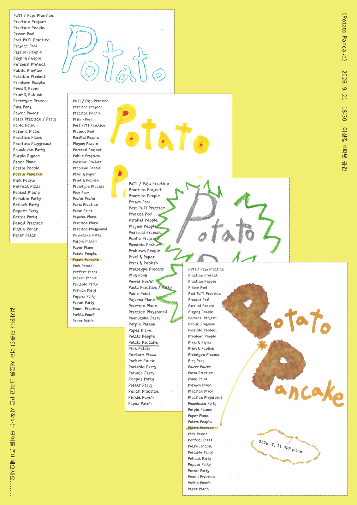

주제 1
주제 2
주제 3
주제 4
현
서연
시대
승민
바치
도노
오늘이
서로
우성
무루골
알샴
소요
준현
희주
휘
재이
지원
현
서연
시대
승민
바치
도노
오늘이
서로
우성
무루골
알샴
소요
준현
희주
휘
재이
지원
PP는 파주타이포그라피배곳(PaTI) 한배곳 4학년 17명으로 마친보람을 함께 꾸리는 콜렉티브입니다.
PP라는 이름의 뜻은 하나로 정해두지 않았습니다. Pati, Practice, Possibilities처럼 필요에 따라 다르게 채워집니다.
워크숍, 공연, 강연, 식사, 전시, 대화 등 그 형태는 아직 정해져 있지 않습니다.
이곳은 그 과정에서 우리가 무엇을 했고, 누구를 만났고, 무엇을 생각했는지를 모아두는 공간입니다.

Potato Pancake
이상집 404셀
2026.09.21
공간팀 리서치
파주 고물상
2026.09.29
디자인팀 깃발제작
—
날짜 미정
홍보팀 4학년 책상 연구
—
날짜 미정
디자인팀 모보 페스티벌
—
날짜 미정